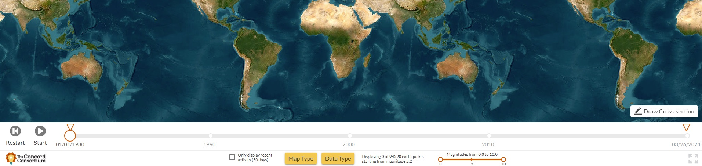

- Exploration of Seismic Data
Please click here
for relevant online resources that I utilized for the Literature Review on Virtual Labs
This Earth Science literature link, also known as Sysmic Explorer, features two prominent buttons positioned at the bottom of the page,
labeled Map Type and Data Type. These buttons provide convenient access to a variety
of visualization options, offering a range of useful tools for exploring data and maps.
Of particular interest to me currently are the topics of Volcanic Eruptions and Tectonic Plate Movement around the Galapagos Islands. Please take a look at my
map here for the movement of tectonic plates.

Note: During the pandemic year, I utilized the above Seismic Explorer link as a case study/research within
the Literature Review of the Virtual Physics/Physical Science Laboratory,
as part of a Bridge to the Baccalaureate Undergraduate Research Experience student project.
Here are a few standard Laboratory exercises
focused on locating earthquakes or exploring earth science concepts that I used to incorporate into my Geology and/or Physical Science courses around 20 to 30 years ago.
You can check a similar text problem here
regarding finding the epicenter of an earthquake that I recently introduced in my general physics lecture class.
- Traditional physics textbook problems to other fields like Geology, Marine Science, and beyond
Please click here
to access introductory physics-style exercises, including model problems from my courses,
covering a range of topics from traditional physics to interdisciplinary subjects such as Geology,
Marine Science, Atmospheric Science, Climatology, Life Sciences, and more.
One important part of how I teach (incorporating my teaching philosophy) is focusing on making connections and showing the relevance to
other disciplines and real-life scenarios. To do this, over the past thirty years of my physics education,
I've collected many such problems that relate to other subjects and real-world situations.
Here are the Tangent Galvanometer Lab and
Viscosity Lab that I am revisiting
after many years.
- Helpful Resources
- Public Outreach program at the School of Ocean and Earth Science and Technology at UH Manoa.
Click here to discover more.
- GRACE: Gravity Recovery and Climate Experiment.
Click here to discover more.
- Seismological Facility for the Advancement of Geoscience (SAGE) Wilber 3: Select Event
Click here to explore Earthqake data.
- Flow of Viscous Fluid - Methods and Mechanisms
Viscous fluid flow occurs when a liquid exhibits resistance to changes in its shape. It's important in many natural events and engineering applications.
Understanding how it works helps us understand things like ocean currents and how magma moves in the Earth's mantle. We study it using math, computer models, and experiments.
In Earth's core, molten iron and nickel move in a way that creates our magnetic field, which I believe occurs through the geodynamo process.
This affects how our planet works inside and out. So, studying how liquids move is not just about scientific research.
It helps us understand how Earth changes over time, the geophysical processes.
Click here to see some example problems
related to fluid dynamics that are used in my calc-based introductory physics classes.
Review mathematical models of Viscosity, Poiseuille's law, and Laminar & Turbulent Drag forces. (TBU)
- Underwater Experiment: Shrinking Styrofoam Cups in Deep-Sea Conditions
Please click
here for relevant concept
While this Styrofoam type demonstration does not correspond with the objectives or the mission of this high-level seismic project during the trip,
I am still inclined to propose it. Let's Give It A Try!😊
Alternatively, we could consider observing the experiment in a museum setting, or Request other adventurers or Resources
to Witness it on a Deep-Sea Expedition. Required Equipment and Materials: Styrofoam cups, permanent markers, a cage or container to secure the cups,
professional-grade ropes and hooks, and other logistical items for the experiment. It's worth noting that this demo can also be expensive and time consuming.
- Equatorial Sundial and more K-12 Classroom Activities & Resource
Please click
here to learn about relevant concept, especially for kids in school
Equatorial Sundial and Tools of the Astronomer. Creating an equatorial sundial is a simple yet effective way to understand essential
astronomical principles and tools. Reference: The University of Texas at Austin.